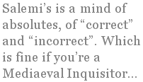

Our Ersatz Critics
— A critique of Dr Joseph Salemi
You are the hammer of heretics — persevere with strength!
The Lord’s house is not governed without fighting.
— Joseph Salemi
Joseph Salemi, as many who follow American metrical poetry know, is a prolific critic and polemicist. He often recycles certain themes with great frequency, not least the one where he argues that most metrical poets are a bunch of wusses, ’fraidy-cats, knock-kneed PC milquetoasts. Evidence? Here’s Salemi:
“[T]he fear manifests itself in an unwillingness to write real formal poetry, as opposed to the numerous ersatz varieties that sometimes try to take its place. For example, some people calling themselves formalists pay no attention to the stress in a line, but merely count syllables; or else they use so many substitutions that the resulting line might just as well be syllabic. That is a completely fake sort of “formal” verse, and I am tired of hearing the practice defended by persons who should know better. Don’t tell me about “freedom,” don’t tell me about “experimentation,” don’t tell me about “new possibilities.” You either compose in correct meter or you don’t.”
(“Our Ersatz World,” Expansive Poetry & Music Online, July 2005)
This passage is, if you will, Salemi’s negative programme. Syllabic verse isn’t “formal” — never mind that there are many, many successful English-language poems in syllabics, or that syllabics are a “form,” insofar as there is a coherent organising principle in syllabic poetry. The implication is clear. If it isn’t a tight accentual-syllabic line, it’s crap.
Now, you will notice that Salemi rhetorically throws out a few excuses for what he sees as slipshod practice (which also embraces things like slant rhyme), only to knock them down with “You either compose in correct meter or you don’t.” This method of writing poetry is a math exercise rather than an art. And there is a case he could make for keeping the metre tight — that loose lines can, at times, get listless in feel and sound. The use of substitutions — or the lack of their use — like any other effect, is something that a particular poem (and a particular poet) should determine. But no, not in Dr. Salemi’s class, where such matters are as straightforward as arithmetic.
The problem, of course, is that I am no longer in Mrs. Burton’s Algebra Two class. Nor is metre a matter of accountancy and getting everything balanced out. Even Salemi’s friend Leo Yankevich admits:
“Masquerade is primarily a book of satirical verses, all of which are imbued with Mr Salemi’s wry and broad-shouldered personality, a personality that I’ve often thought to be a cross between Benito Mussolini’s (before he hooked up with Hitler) and Ralph Kramden’s. Of course, Mussolini was not only a great orator and crestfallen leader, but a learned man with a doctorate and a great love of poetry, and Ralph Kramden (played by Jackie Gleason) was a down-to-earth undeniably funny man from Bensonhurst.”
(Review of Masquerade, The New Formalist, Vol. V, No. 2)
Okay, that doesn’t prove the point at all, though it is an interesting take on the fascist dictator. Here’s the quote I wanted, from the same review:
“His metres are strict and conservative, and it may be argued that the stresses in his feet lack variation, producing thumping iambs, rather than the subtle music of a Robert Frost or a Richard Wilbur. However, Mr Salemi, a descendent of Pope and Dryden, does this with premeditation. His satirical verses require such thumping in order to have a mnemonic effect on the reader.”
Though Yankevich defends Salemi’s own thumpalong metrical practice, he nevertheless recognizes the prosodic problem. After a while, it’s the metrical equivalent of that garage band down the street playing the opening bars of “Iron Man” by Black Sabbath over and over. Yeah, the song kicks ass, cuts dick, and takes no prisoners… but three hours of it?
In some cases, according to Salemi, the problem is laziness. To illustrate the point, here’s Salemi attacking slant-rhymers:
“Another ersatz obscenity is the excessive use of slant-rhyme or near-rhyme in rhyming forms. I ask the people who are addicted to this practice, and who think that it is très chic and classy: Are you aware of the fact that you are publicly declaring yourselves incompetents who can’t get a rhyme? And don’t lecture me about Dickinson — she did what she did for her own reasons, and until you attain her stature make an effort to master more vocabulary.” (Ibid.)
Several things strike the reader here. Dickinson, rather famously, had almost no poetic stature in the period that mattered to her — when she was alive. None of us know what our stature will be after we’re dead. But Salemi’s mixing two arguments here. You’re not as good as Dickinson, so don’t bother. (I’d wager that Salemi isn’t as good as Shakespeare, so why should he attempt the Shakespearean sonnet?) But for Salemi, justifications of slant-rhyme are merely smokescreens for incompetence. Never mind elements of surprise, relatively subtle consonances and assonances, possibly techniques borrowed from other languages (for example, Irish and Welsh prosody). Nope, it is necessarily incompetence.
And that, in a nutshell is the problem with Joseph Salemi. He is not only uninterested in what his opponents have to say, but he does not even give them the common courtesy of at least checking up on why they do what they do, not that we are given a single example anywhere. Why not quote from an article by a Formalist advocating a looser prosody than Salemi? Well, because he’s already reached his conclusion.
And that conclusion is this:
“As long as there are workshops, seminars, study groups, and chatrooms, the dek-people [decorous and unwilling to offend] will maintain their unofficial hegemony over New Formalist poetry. For in a public setting, where ideas are bandied back and forth, persons who express dismay and outrage have a distinct advantage over others. It happens in faculty meetings, conferences, and gathering of every type — the offended party stands up in high dudgeon and delivers an impassioned indictment of something ‘outrageous’ (i.e. exciting and interesting), and everyone else feels obliged to acquiesce.” (Ibid.)
Now, I can see Salemi’s point, but only to a degree. Yes, most formalist poetry does suffer from a surfeit of decorousness. But what would Salemi replace it with?
I assume his own work might give us an indication. Here is a fairly typical Joseph Salemi “satire” from the Lilacs on Good Friday and Other Poems (New Formalist Press, 2007), quoted in full:
To an Aging Countercultural Twit
At Woodstock you went walking in the nude,
But you were high on pot, and just a teen.
Your life is now more upscale and subdued,
And tinted with environmental green.
You still think Marx a genius, but not quite
As brilliant as Adorno and Marcuse;
Despite rheumatic damps, you still ignite
When someone sparks your old New Leftist fuse.
Fatally swift with time’s extended wings —
So many sainted icons rose and fell!
Your heart yearns for those past — and passing — kings:
Daniel Ortega, Ho Chi Minh, Fidel.
Where are the marching Workers of the World?
Where are the barricades with surging crowds?
Where are the rocks and gasoline bombs hurled
Against policemen swathed in tear gas clouds?
Gone with the wind. Like Rolling Stone and Mao,
They’ve slipped into the dustbin of the past.
The only places that give solace now
Are Berkeley, North Korea, Cambridge, Mass.
You’ve joined a health club, and you watch your weight.
Macrobiotic meals and exercise
May also undermine the bourgeois state
And work against the hegemonic lies.
Take vitamins, fruit juice, and lengthy hikes
But take them with a grain of salt. Perhaps
Organic foods and stationary bikes
Will not stave off the ultimate collapse.
No, it’s not the sort of lyrical poem that Salemi decries, but it isn’t satire, either. No, it’s a series of stereotypes conflating several distinct phenomena into a single blast of dubious ridicule. It’s schoolyard crap. Nyah nyah nyah! You lost. And you’re into eating healthy? Fuckin’ pussy. While I, too, would like to see more vigorous verse, this will not do. And, what’s more, it will not get under the skin of its intended targets. Every health-conscious aging New Leftist knows the drill by now. This is the Rush Limbaugh school of satire, tossing out a few “zingers” aimed at reinforcing a few stereotypes for those who already hold such views.
Granted, Salemi has, in the past, stated that his goal is not to convince anyone of anything, and Salemi has stated:
“If I call an individual a stupid jerk, does anyone imagine I am trying to persuade him to accept that judgment? No — I’m simply expressing my contempt for him. So it is with satire. If I ridicule some yuppie twerp, I don’t expect him to sell his BMW and join a monastic order. I just expect him to be the butt of my readers’ laughter.” (“Liberals and Literature: A Reply to Robert Darling,” Expansive Poetry & Music Online)
Well, satire generally isn’t going to convince the dorks, dweebs, and twerps of the world that they are dorks, dweebs, and twerps, but it should, at least, put something else into the mix, not only get under the skin of the intended targets but live in their skin a bit, too. Salemi’s habit of simply calling everything with which he disagrees stupid gets in the way of this, rendering him less Alexander Pope than Nelson Muntz.
And what makes Salemi tick? In poetry, criticism, and politics, it is the same thing — a belief in the utter rectitude of his beliefs and a two-way division between his kind of people and assholes. One rarely encounters a critic as politicized as Salemi. Here he is explaining why liberals and lefties can’t write satire:
“But left-liberals, who by their very nature are rule-setters burdened with an overly scrupulous sense of propriety, can’t allow themselves the transgressive over-the-top insouciance that makes for a great attack. It's just not in them. They are boring little people who are always going on about fairness and balance and non-propagandistic language and the need for consensus. Do you really think anybody with that kind of effete mindset can be a satirist? Satire is the province of killers, not UN diplomats.” (“Politics and Satire,” Expansive Poetry & Music Online, 2004)
Indeed, given Salemi’s views, one wonders if he considers anyone remotely left-of-centre capable of writing a decent poem at all. One assumes that, on some level, he must, as magazines the good doctor has edited have included poets of left-of-centre views. Yet his contempt for those who differ from him is marked. Here he is describing those whom he considers to be the cultural elite in the United States:
College educated, professional, fairly affluent, trend-conscious, issue-oriented, self-important, and utterly convinced of their absolute superiority, America’s left-liberal mandarins are as thoughtlessly arrogant as Homeric warriors. Like every true aristocracy they are totally self-absorbed, and see opposition to their will as either pathological or malevolent. Filled with a sense of privilege and entitlement, they are impatient with the slightest check to their ambitions, and their main ambition is to impose their political views on the nation as a whole, and to see that the cultural ramification of those views is unimpeded.
(“Poetry and Class, Part I,” Expansive Poetry & Music Online)
So, we are dealing with a man whose own views on poetry are markedly linked to his politics.
And, indeed, there is a consistency between Salemi’s political views and his poetical views. In politics, Salemi is not only right-wing (which is, well, fair enough), but he is a dogmatic right-winger, a purveyor of an ultramontane prosody complete with purported heretics and, indeed, excommunications of those whose work does not match Salemi’s checklist. Step out of line? The Poetry Pontiff of Bensonhurst will denounce your errors to the true believers. Salemi’s is a mind of absolutes, of “correct” and “incorrect.” Which is fine if you’re a Mediaeval Inquisitor, but it’s rather constricting for a writer of twenty-first-century verse.
Indeed, Salemi’s polemics remind one a great deal of Diane Wakoski’s fulminations against metrical verse in “The New Conservatism in American Poetry” (American Book Review, May-June 1986), in which Wakoski famously (or infamously) presented the revival of metrical poetry in the U.S. in the 1980s as the aesthetic wing of the Reagan Revolution. Though Wakoski’s aesthetics were different, the us-and-them posturing and constricted view of what poetry should and should not be should be eerily familiar to Salemi’s readers.
Of course, Salemi does not stand for the whole of the Neo-Formalist movement, which has served a useful purpose in American poetry by insisting that writing in metre is a legitimate choice in modern verse. But Salemi’s insistence on a rigid orthodoxy would not only keep metrical verse marginalised, but would serve as a deadening element in what should be a dynamic relationship between poets, their language, and the world around them.
Quincy R. Lehr was born and raised in Oklahoma, and, via Austin Texas, New York City, and Dublin, currently resides in Galway, Ireland. His first book, The Perfect Joke, will be published in 2008 by Seven Towers.